graph LR
d("Decision on next sample") --"Collect"-->s("System under study")
s--"Observe"-->d
9 Reinforcement Learning
“Information is the resolution of uncertainty.” Claude Shannon, 1948
Thus far we have discussed making decisions under uncertainty (Chapter 4 and Chapter 5) and two modes of data collection: field experiments and observational studies. In a field experiment we control the data‐generation process before the study begins, whereas in an observational study we have no such control and must work with whatever data are produced.
What if we can choose which data to collect while the experiment is running? This leads to sequential (or adaptive) experimental design, in which each new observation is selected on the basis of the data gathered so far, creating a feedback loop between data generation and decision-making. The idea is illustrated in the following diagram:
There are multiple applications where this general framework can be applied and multiple algorithms that implement this concept. In this section, we will consider the most widely used among them:
- Multi-Armed Bandits
- Q-Learning
- Active Learning
- Bayesian Optimization
One of the first practical demonstrations of reinforcement learning (then called trial-and-error learning) was Claude Shannon’s 1950s mechanical mouse Theseus, which learned to find its way through a maze.
9.1 Multi-Armed Bandits
When the number of alternatives is large and the testing budget limited, a different approach to A/B testing —- the multi-armed bandit (MAB) can be more sample-efficient. Although the mathematical analysis and design of the experiments is slightly more complicated, the idea is simple. Instead of testing all alternatives at the same time, we test them sequentially. We start with a small number of alternatives and collect data. Based on the data we decide which alternative to test next. This way we can test more alternatives with the same number of samples. Thus, MABs allow us to explore and exploit simultaneously. MABs require that the outcome of each experiment is available immediately or with small enough delay to make a decision on the next experiment Scott (2015). On the other hand, MABs are more sample efficient and allow us to find an optimal alternative faster. Thus, in the case when time is of the essence and there is an opportunity cost associated with delaying the decision, MABs are a better choice.
Formally, there are \(K\) alternatives (arms) and each arm \(a\) is associated with a reward distribution \(v_a\), the value of this arm. The goal is to find the arm with the highest expected reward and accumulate the highest total reward in doing so. The reward distribution is unknown and we can only observe the reward after we select an arm \(a\) but we assume that we know the distribution \(f_a(y\mid \theta)\), where \(a\) is the arm index, \(y\) is the reward, and \(\theta\) is the set of unknown parameters to be learned. The value of arm \(v_a(\theta)\) is known, given \(\theta\). Here are a few examples:
- In online advertisements, we have \(K\) possible ads to be shown and probability of user clicking is given by vector \(\theta = (\theta_1,\ldots,\theta_K)\) of success probabilities for \(K\) independent binomial models, with \(v_a(\theta) = \theta_a\). The goal is to find the ad with the highest click-through rate.
- In website design, we have two design variables, the color of a button (red or blue) and its pixel size (27 or 40), we introduce two dummy variables \(x_c\) for color, \(x_s\) for size and the probability of user clicking is given by \[ \mathrm{logit} P(\text{click} \mid \theta) = \theta_0 + \theta_x x_c + \theta_s x_s + \theta_{cs}x_cx_s, \] with \(v_a(\theta) = P(\text{click} \mid \theta)\).
A variation of the second example would include controlling for background variables, meaning adding covariates that correspond to variables that are not under our control. For example, we might want to control for the time of the day or the user’s location. This would allow us to estimate the effect of the design variables while controlling for the background variables. Another variation is to replace the binary outcome variable with a continuous variable, such as the time spent on the website or the amount of money spent on the website or count variable. In this case we simply use linear regression or another appropriate generalized linear model. Although at any given time, we might have our best guess about the values of parameters \(\hat \theta\), acting in a greedy way and choosing the arm with the highest expected reward \(\hat a = \arg\max_a v_a(\hat \theta)\), we might be missing out on a better alternative. The problem is that we are not sure about our estimates \(\hat \theta\) and we need to explore other alternatives. Thus, we need to balance exploration and exploitation. A widely used and oldest approach for managing the explore/exploit trade-off in a multi-armed bandit problem is Thompson sampling. The idea is to use Bayesian inference to estimate the posterior distribution of the parameters \(\theta\) and then sample from this distribution to select the next arm to test. The algorithm is as follows.
- Initial Beliefs. For each arm \(k\) (\(k = 1,\ldots,K\)), define a prior belief about its reward distribution using a beta distribution with parameters \(\alpha_i\) and \(\beta_i\). These parameters represent the prior knowledge about the number of successes (\(\alpha_k\)) and failures (\(\beta_k\)) experienced with arm \(k\).
- Sampling Parameters. For each arm \(k\), sample a reward \[
\hat \theta_k \sim Beta(\alpha_k, \beta_k)
\]
from the beta distribution. This simulates drawing a potential reward from the unknown true distribution of arm \(i\). A suboptimal greedy alternative is to select expected value of the parameter \(\hat \theta_k = E(\theta_k) =\alpha_k/(\alpha_k + \beta_k)\).
- Sampling Parameters. For each arm \(k\), sample a reward \[
\hat \theta_k \sim Beta(\alpha_k, \beta_k)
\]
- Choosing the Best Arm. Select the arm \(k\) with the highest sampled reward \(\hat \theta_k\): \[ a_t = \arg\max_i \hat \theta_k. \]
- Updating Beliefs. After observing the actual reward \(R_t\) for the chosen arm \(a_t\), update the parameters for that arm: \[ \alpha_i = \alpha_i + R_t, \quad \beta_i = \beta_i + (1 - R_t) \] This update incorporates the new information gained from the actual reward into the belief about arm \(a_t\)’s distribution.
- Repeat. Go back to step 2 and continue sampling, choosing, and updating until you reach a stopping point.
As the algorithm progresses, the posterior distributions of the arms are updated based on observed data, and arms with higher estimated success probabilities are favored for selection. Over time, Thompson Sampling adapts its beliefs and preferences, leading to better exploration and exploitation of arms.
It’s important to note that the effectiveness of Thompson Sampling depends on the choice of prior distributions and the updating process. The algorithm’s Bayesian nature allows it to naturally incorporate uncertainty and make informed decisions in the presence of incomplete information. The initial priors \((\alpha_i, \beta_i)\) can be set based on any available information about the arms, or as uniform distributions if no prior knowledge exists. This is a basic implementation of Thompson sampling. Variations exist for handling continuous rewards, incorporating side information, and adapting to non-stationary environments.
When to End Experiments
Step 2 of the TS algorithm can be replaced by calculating probability of an arm \(a\) being the best \(w_{at}\) and then choose the arm by sampling from the discrete distribution \(w_{1t},\ldots,w_{Kt}\). The probability of an arm \(a\) being the best is given by \[ w_{at} = P(a \text{ is optimal } \mid y^t) = \int P(a \text{ is optimal } \mid \theta) P(\theta \mid y^t) d\theta, \] where \(y^t = (y_1,\ldots,y_t)\) is the history of observations up to time \(t\). We can calculate the probabilities \(w_{at}\) using Monte Carlo. We can sample \(\theta^{(1)},\ldots,\theta^{(G)}\) from the posterior distribution \(p(\theta \mid y^t)\) and calculate the probability as \[ w_{at}\approx \dfrac{1}{G}\sum_{g=1}^G I(a = \arg\max_i v_i(\theta^{(g)})), \] where \(I(\cdot)\) is the indicator function. This is simply the proportion of times the arm was the best in the \(G\) samples.
Although using a single draw from posterior \(p(\theta \mid y^t)\) (as in the original algorithm) is equivalent to sampling proportional to \(w_{at}\), the explicitly calculated \(w_{at}\) yields a useful statistic that can be used to decide on when to end the experiment.
We will use the regret statistic to decide when to stop. Regret is the difference in values between the truly optimal arm and the arm that is apparently optimal at time \(t\). Although we cannot know the regret (it is unobservable), we can compute samples from its posterior distribution. We simulate the posterior distribution of the regret by sampling \(\theta^{(1)},\ldots,\theta^{(G)}\) from the posterior distribution \(p(\theta \mid y^t)\) and calculating the regret as \[ r^{(g)} = (v_a^*(\theta^{(g)}) - v_{a^*_t}(\theta^{(g)})), \] Here \(a^*\) is the arm deemed best across all Monte Carlo draws and the first term is the value of the best arm within draw \(g\). We choose \(a^*_t\) as \[ a^*_t = \arg\max_a w_{at}. \]
Often, it is convenient to measure the regret on the percent scale and then we use \[ r^{(g)} \leftarrow r^{(g)}/v_{a^*_t}(\theta^{(g)}) \]
We can demonstrate using simulated data. The function below generates samples \(\theta^{(g)}\)
bandit = function(x,n,alpha = 1,beta = 1,ndraws = 5000) {
set.seed(17) # Kharlamov
K <- length(x) # number of bandits
prob <- matrix(nrow = ndraws,ncol = K)
no = n - x
for (a in 1:K) {# posterior draws for each arm
prob[, a] = rbeta(ndraws,x[a] + alpha,no[a] + beta)
}
prob
}Say we have three arms with 20, 30, and 40 sessions that have generated 12, 20, and 30 conversions. We assume a uniform prior for each arm \(\theta_i \sim Beta(1,1)\) and generate 6 samples from the posterior of \(\theta \mid y^t\).
x = c(12,20,30)
n = c(20, 30,40)
prob = bandit(x, n,ndraws=6)| \(\theta_1\) | \(\theta_2\) | \(\theta_3\) | |
|---|---|---|---|
| 1 | 0.60 | 0.63 | 0.58 |
| 2 | 0.62 | 0.62 | 0.74 |
| 3 | 0.69 | 0.53 | 0.67 |
| 4 | 0.49 | 0.59 | 0.73 |
| 5 | 0.61 | 0.51 | 0.69 |
| 6 | 0.47 | 0.64 | 0.69 |
Now, we calculate the posterior probabilities \(w_{at} = P(a \text{ is optimal } \mid y^t)\) for each of the three arms
wat = table(factor(max.col(prob),levels = 1:3))/6| 1 | 2 | 3 |
|---|---|---|
| 0.17 | 0.17 | 0.67 |
Thus far, the third arm is the most likely to be optimal, with probability 67%. Now, we calculate the regret for each of the six draws from the posterior of \(\theta \mid y^t\).
regret = (apply(prob,1,max) - prob[,3])/prob[,3]| 1 | 2 | 3 | 4 | 5 | 6 |
|---|---|---|---|---|---|
| 0.09 | 0 | 0.03 | 0 | 0 | 0 |
We compute value row by row by subtracting the largest element of that row from the element in column 3 (because arm 3 has the highest chance of being the optimal arm). All rows but 1 and 3 are zero. In the first row, the value is (0.63-0.58)/0.58 because column 2 is 0.05 larger than column 3. If we keep going down each row we get a distribution of values that we could plot in a histogram. We can generate one for a larger number of draws (10000).
prob = bandit(x, n,ndraws=10000)
regret = (apply(prob,1,max) - prob[,3])/prob[,3]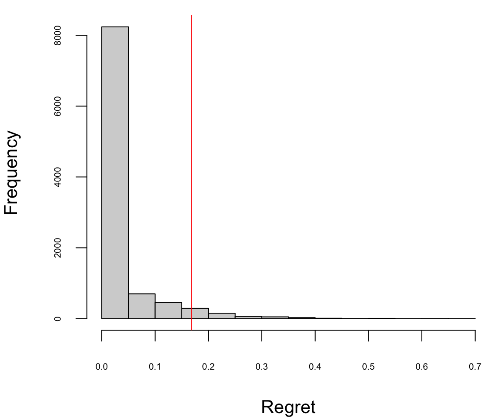
wat = table(factor(max.col(prob),levels = 1:3))/10000| 1 | 2 | 3 |
|---|---|---|
| 0.08 | 0.2 | 0.72 |
The histogram of the value remaining in an experiment (regret). The vertical line is the 95th percentile, or the potential value remaining.
Arm 3 has a 72% probability of being the best arm, so the value of switching away from arm 3 is zero in 72% of the cases. The 95th percentile of the value distribution is the potential value remaining (CvR) in the experiment, which in this case works out to be about 16%.
quantile(regret,0.95) 95%
0.17 You interpret this number as “We’re still unsure about the CvR for arm 3, but whatever it is, one of the other arms might beat it by as much as 16%.”
Google Analytics, for example, “ends the experiment when there’s at least a 95% probability that the value remaining in the experiment is less than 1% of the champion’s conversion rate. That’s a 1% improvement, not a one percentage point improvement. So if the best arm has a conversion rate of 4%, then we end the experiment if the value remaining in the experiment is less than .04 percentage points of CvR”.
Contextual Bandits
Traditional multi-armed bandit models, like the binomial model, assume independent observations with fixed reward probabilities. This works well when rewards are consistent across different groups and times. However, for situations with diverse user bases or fluctuating activity patterns, such as international audiences or browsing behavior, this assumption can be misleading.
For instance, companies with a global web presence may experience temporal effects as markets in Asia, Europe, and the Americas become active at different times of the day. Additionally, user behavior can change based on the day of the week, with people engaging in different browsing patterns and purchase behaviors. For example, individuals may research expensive purchases during work hours but make actual purchases on weekends.
Consider an experiment with two arms, A and B. Arm A performs slightly better during the weekdays when users browse but don’t make purchases, while Arm B excels during the weekends when users are more likely to make purchases. If there is a substantial amount of traffic, the binomial model might prematurely conclude that Arm A is the superior option before any weekend traffic is observed. This risk exists regardless of whether the experiment is conducted as a bandit or a traditional experiment. However, bandit experiments are more susceptible to this issue because they typically run for shorter durations.
To mitigate the risk of being misled by distinct sub-populations, two methods can be employed. If the specific sub-populations are known in advance or if there is a proxy for them, such as geographically induced temporal patterns, the binomial model can be adapted to a logistic regression model. This modification allows for a more nuanced understanding of the impact of different factors on arm performance, helping to account for variations in sub-population behavior and temporal effects. \[ \mathrm{logit} P(\text{click}_a \mid \theta, x) = \theta_{0a} + \beta^Tx, \] where \(x\) describes the circumstances or context of the observation. The success probability for selecting arm \(a\) under the context \(x\) is represented as \(P(\text{click}_a \mid \theta, x)\). Each arm \(a\) has its own specific coefficient denoted as \(\beta_{0a}\) with one arm’s coefficient set to zero as a reference point. Additionally, there is another set of coefficients represented as \(\beta\) that are associated with the contextual data and are learned as part of the model. The value function can then be \[ v_a(\theta) = \mathrm{logit}^{-1}(\beta_{0a}). \]
If we lack knowledge about the crucial contexts, one option is to make the assumption that contexts are generated randomly from a context distribution. This approach is often exemplified by the use of a hierarchical model like the beta-binomial model. \[\begin{align*} \theta_{at} &\sim Beta(\alpha_a,\beta_a)\\ \text{click}_a \mid \theta &\sim Binomial(\theta_{at}), \end{align*}\] where \(\theta = \{\alpha_a,\beta_a ~:~ a = 1,\ldots,K \}\), with value function \(v_a(\theta) = \alpha_a/\beta_a\)
Summary of MAB Experimentation
The design phase begins with defining your arms by identifying the different options you want to evaluate, such as different website layouts, pricing strategies, or marketing campaigns. Next, choose a bandit algorithm that balances exploration and exploitation in various ways. Popular choices include Epsilon-greedy, Thompson Sampling, and Upper Confidence Bound (UCB). Then set your parameters by configuring the algorithm parameters based on your priorities and expected uncertainty. For example, a higher exploration rate encourages trying new arms earlier. Finally, randomize allocation by assigning users to arms randomly, ensuring unbiased data collection.
During the analysis phase, track rewards by defining and measuring the reward metric for each arm, such as clicks, conversions, or profit. Monitor performance by regularly analyzing the cumulative reward and arm selection probabilities to see which arms are performing well and how the allocation strategy is adapting. Use statistical tools like confidence intervals or Bayesian methods to compare performance between arms and assess the significance of findings. Make adaptive adjustments by modifying the experiment based on ongoing analysis. You might adjust algorithm parameters, stop arms with demonstrably poor performance, or introduce new arms.
Start with a small pool of arms to avoid information overload by testing a manageable number of options initially. Set a clear stopping criterion by deciding when to end the experiment based on a predetermined budget, time limit, or desired level of confidence in the results. Consider ethical considerations by ensuring user privacy and informed consent if the experiment involves personal data or user experience changes. Interpret results in context by remembering that MAB results are specific to the tested conditions and might not generalize perfectly to other contexts.
By following these steps and utilizing available resources, you can design and analyze effective MAB experiments to optimize your decision-making in various scenarios. Remember to adapt your approach based on your specific goals and context to maximize the benefits of this powerful technique.
9.2 Bellman Principle of Optimality
“An optimum policy has the property that whatever the initial state and initial decision are, the remaining decision sequence must be optimum for the state resulting from the first decision.” – Richard Bellman
Example 9.1 (Secretary Problem) The Secretary Problem, also known as the marriage problem or sultan’s dowry problem, is a classic problem in decision theory and probability theory. The scenario involves making a decision on selecting the best option from a sequence of candidates or options. The problem is often framed as hiring a secretary, but it can be applied to various situations such as choosing a house, a spouse, or any other scenario where you sequentially evaluate options and must make a decision.
In this problem, you receive \(T\) offers and must either accept or reject the offer “on the spot”. You cannot return to a previous offer once you have moved on to the next one. Offers are in random order and can be ranked against those previously seen. The aim is to maximize the probability of choosing the offer with the greatest rank. There is an optimal \(r\) (\(1 \le r < T\)) to be determined such that we examine and reject the first \(r\) offers. Then of the remaining \(T - r\) offers we choose the first one that is best seen to date.
A decision strategy involves setting a threshold such that the first candidate above this threshold is hired, and all candidates below the threshold are rejected. The optimal strategy, known as the 37% rule, suggests that one should reject the first \(r=T/e\) candidates and then select the first candidate who is better than all those seen so far.
The reasoning behind the 37% rule is based on the idea of balancing exploration and exploitation. By rejecting the first \(T/e\) candidates, you gain a sense of the quality of the candidates but avoid committing too early. After that point, you select the first candidate who is better than the best among the initial \(r\) candidates.
It’s important to note that the 37% rule provides a probabilistic guarantee of selecting the best candidate with a probability close to 1/e (approximately 37%) as \(T\) becomes large.
To solve the secretary problem, we will use the principle of optimality due to Richard Bellman. The principle states that an optimal policy has the property that whatever the initial state and initial decision are, the remaining decisions must constitute an optimal policy with regard to the state resulting from the first decision. In other words, the policy is optimal from the first decision onwards.
The solution to the secretary problem can be found via dynamic programming. Given an agent with utility function \(u(x,d)\), with current state \(x\), and decision \(d\). The law of motion of \(x_t\) is given by \(x_{t+1} = p(x_t,d_t)\). Bellman principle of optimality states that the optimal policy is given by the following recursion \[ V(x_t) = \max_{d_t} \left \{ u(x_t,d_t) + \gamma \mathbb{E} \left [ V(x_{t+1}) \right ] \right \} \] where \(\gamma\) is the discount factor. The optimal policy is given by \[ d_t^* = \arg \max_{d_t} \left \{ u(x_t,d_t) + \gamma \mathbb{E} \left [ V(x_{t+1}) \right ] \right \}. \]
Now, back to the secretary problem. Let \(y^t = (y_1,\ldots,y_t)\) denote the history of observations up to time \(t\). State \(x_t=1\) if the \(t\)th candidate is the best seen so far and \(x_t=0\) otherwise. The decision \(d_t=1\) if the \(t\)th candidate is hired and \(d_t=0\) otherwise. The utility function is given by \(u(x_t,d_t) = x_t d_t\). The Bellman equation is given by \[ P(\text{best of T}\mid x_t=1) = \dfrac{P(\text{best of T})}{P(x_t=1)} = \dfrac{1/T}{1/t} = \dfrac{t}{T}. \] The \(t\)th offer is the best seen so far places no restriction on the relative ranks of the first \(t-1\) offers. Therefore, \[ p(x_t=1,y^{t-1}) = p(x_t=1)p(y^{t-1}) \] by the independence assumption. Hence, we have \[ p(x_t=1 \mid y^{t-1}) = p(x_t=1) = \dfrac{1}{t}. \]
Let \(p^*(x_{t-1}=0)\) be the probability under the optimal strategy. Now we have to select the best candidate, given we have seen \(t-1\) offers so far and the last one was not the best or worse. The probability satisfies the Bellman equation \[ p^*(x_{t-1}=0) = \frac{t-1}{t} p^*(x_{t}=0) + \frac{1}{t}\max\left(t/T, p^*(x_{t}=0)\right). \] This leads to \[ p^*(x_{t-1}=0) = \frac{t-1}{T} \sum_{\tau=t-1}^{T-1}\dfrac{1}{\tau}. \]
Remember, the strategy is to reject the first \(r\) candidates and then select the first. The probability of selecting the best candidate is given by \[ P(\text{success}) = \dfrac{1}{T}\sum_{a=r+1}^T \dfrac{r}{a} \approx \dfrac{1}{T}\int_{r}^{T}\dfrac{r}{a} = \dfrac{r}{T} \log \left ( \dfrac{T}{r} \right ). \] We optimize over \(r\) by setting the derivative \[ \frac{\log \left(\frac{T}{r}\right)}{T}-\frac{1}{T} \] to zero, to find the optimal \(r=T/e\).
If we plug in \(r=T/e\) back to the probability of success, we get \[ P(\text{success}) \approx \dfrac{1}{e} \log \left ( e \right ) = \dfrac{1}{e}. \]
Monte Carlo Simulations
Simulations are a powerful tool for making decisions when we deal with a complex system, which is difficult or impossible to analyze mathematically. They are used in many fields, including finance, economics, and engineering. They can also be used to test hypotheses about how a system works and to generate data for statistical analysis.
We start by showing how the secretary problem can be analyzed using simulations rather than analytical derivations provided above.
set.seed(17) # Kharlamov
nmc = 1000
n = 1000
sz = 300
rules = round(n*seq(0.002,0.8,length.out = sz))
rules = unique(rules[rules>0])
sz = length(rules)
cnt = rep(0,sz)
quality = rep(0,sz)
for (i in 1:sz)
{
for (j in 1:nmc){
x = sample(1:n,n)
screen = x[1:(rules[i]-1)]
best_screen = max(screen)
xchoice = x[(rules[i]):n]
better_candidates = which(xchoice > best_screen)
if (length(better_candidates)==0)
choice = x[n]
else
choice = xchoice[min(better_candidates)]
cnt[i] = cnt[i] + (choice == max(x))
quality[i] = quality[i] + choice
}
}
d = data.frame(cnt=cnt, quality=quality,nmc=nmc, rules=rules)plot(d$rules, d$cnt/d$nmc, type='l', col=3, lwd=3, xlab="Number of Candidates Screened",
ylab="Probability of Picking the Best")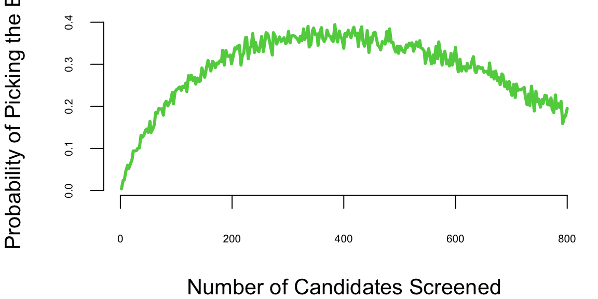
plot(d$rules, d$quality/1000, type='l', col=3, lwd=3, xlab="Number of Candidates Screened",
ylab="Average Quality of Candidate")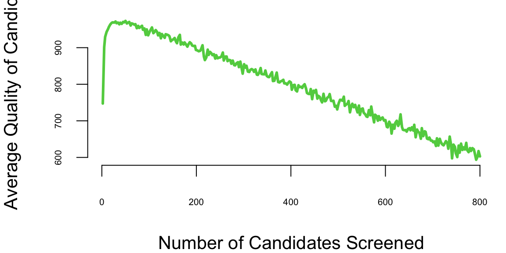
9.3 Markov Decision Processes
Markov decision process (MDP) is a discrete time stochastic control process which provides a mathematical framework for modeling decision making in situations where outcomes are partly random and partly under the control of a decision maker. Almost all dynamic programming and reinforcement learning problems are formulated using the formalism of MDPs. MDPs are useful in various fields, including robotics, economics, and artificial intelligence. In fact, the multi-armed bandit problem considered before is a special case of MDP with one state. MDPs were known at least as early as the 1950s; a core body of research on Markov decision processes resulted from Ronald Howard’s 1960 book, Dynamic Programming and Markov Processes.
A Markov Decision Process (MDP) is a mathematical framework used for modeling decision making in situations where outcomes are partly random and partly under the control of a decision maker. MDPs are useful in various fields, including robotics, economics, and artificial intelligence, particularly in reinforcement learning. An MDP is defined by:
- States (\(S\)): A set of states representing different scenarios or configurations the system can be in. The key assumption here is the Markov property, which states that the future is independent of the past given the present. This means that the decision only depends on the current state, not on the sequence of events that preceded it.
- Actions (\(A\)): A set of actions available in each state.
- Transition Probability (\(P\)): \(P(s', r | s, a)\) is the probability of transitioning to state \(s'\), receiving reward \(r\), given that action \(a\) is taken in state \(s\).
- Reward (\(R\)): A reward function \(R(s, a, s')\) that gives the feedback signal immediately after transitioning from state \(s\) to state \(s'\), due to action \(a\).
- Discount Factor (\(\gamma\)): A factor between 0 and 1, which reduces the value of future rewards.
Mathematical Representation
The states \(s_t\) and rewards \(R_t\) in MDP are indexed by time \(t\). The state at time \(t+1\) is distributed according to the transition probability \[ P(s_{t+1}\mid s_t,a_t). \] The reward function is \(R_s^a = E[R_{t+1} \mid s, a]\).
The Markov property of the state is that the transition probability depends only on the current state and action and not on the history of states and actions. \[ P(s_{t+1}\mid s_t,a_t) = P(s_{t+1}\mid s_t,a_t,s_{t-1},a_{t-1},\ldots,s_0,a_0). \] In other words, the future only depends on the present and not on the past history. The state is a sufficient statistic for the future.
In the case when the number of states is finite, we can represent the transition probability as a matrix \(P_{ss'}^a = P(s_{t+1} = s' \mid s_t = s, a_t = a)\), where \(s,s' \in S\) and \(a \in A\). For a given action \(a\), the transition probability matrix \(P^a\) is a square matrix of size \(|S| \times |S|\), where each row sums to 1 \[ P^a = \begin{bmatrix} P_{11}^a & P_{12}^a & \cdots & P_{1|S|}^a \\ P_{21}^a & P_{22}^a & \cdots & P_{2|S|}^a \\ \vdots & \vdots & \ddots & \vdots \\ P_{|S|1}^a & P_{|S|2}^a & \cdots & P_{|S||S|}^a \end{bmatrix} \] The reward function is also a matrix \(R_s^a = E[R_{t+1} \mid s_t = s, a_t = a]\).
Markov Reward Process
We can consider a simpler example of Markov Process. This is a special case of MDP when there is no action and the transition probability is simply a matrix \(P_{ss'} = P(s_{t+1} = s' \mid s_t = s)\), where \(s,s' \in S\). For a given action \(a\), the transition probability matrix \(P^a\) is a square matrix of size \(|S| \times |S|\), where each row sums to 1.
Example 9.2 (Student Example) The graph below represents possible states (nodes) and transitions (links). Each node has reward assigned to it which corresponds to the reward function \(R(s)\). The transition probabilities are shown on the links. The graph is a Markov Chain, a special case of MDP with no actions.
graph LR
fb("Facebook; R=1") --0.9--> fb
fb--0.1-->c1("Class 1; R=-2")
c1--0.5-->fb
c1--0.5-->c2("Class 2; R=-2")
c2--0.8-->c3("Class 3; R=-2")
c3--0.6-->p("Pass; R=10")
p--1.0-->s("Sleep; R=0")
c3--0.4-->pub("Pub; R=3")
pub--0.2-->f("Fail; R=-20")
f--1.0-->s
pub--0.3-->c3
pub--0.2-->c1
pub--0.3-->c2
c2--0.2-->s
If we are to pick an initial state and sample a trajectory (path on the graph above) by picking a random action at each state, we will get a random walk on the graph. The reward for each state is shown in the graph. The discounted value of the trajectory is then \[ G_t = R_{t+1} + \gamma R_{t+2} + \gamma^2 R_{t+3} + \cdots = \sum_{k=0}^\infty \gamma^k R_{t+k+1}, \] where \(\gamma\) is the discount factor. The discount factor is a number between 0 and 1 that determines the present value of future rewards. A discount factor of 0 makes the agent myopic and only concerned about immediate rewards. A discount factor of 1 makes the agent strive for a long-term high reward. The discount factor is usually denoted by \(\gamma\) and is a parameter of the MDP. The discount of less than 1 is used to avoid infinite returns in cyclic Markov chains and allows us to discount less certain future rewards. The value of \(\gamma\) is usually close to 1, for example 0.9 or 0.99. The value of \(\gamma\) can be interpreted as the probability of the agent surviving from one time step to the next.
We can calculate sample returns \(G_t\) for this Markov Chain. We first read in the reward matrix
# Reward function
R = read.csv("../data/student-reward.tab", header = T, sep = "\t", row.names=1)
t(R) %>% knitr::kable()| Class 1 | Class 2 | Class 3 | Pub | Pass | Fail | Sleep | ||
|---|---|---|---|---|---|---|---|---|
| Reward | -1 | -2 | -2 | -2 | 3 | 10 | -20 | 0 |
getR = function(s) R[s,]and the transition probability matrix and the reward matrix
# Read transition probability matrix
p = read.csv("../data/student-mdp.tab", header = T, sep = "\t", row.names=1)
kbp = knitr::kable(p)
gsub(0, ' ', kbp) # replace 0 with blank| Class.1 | Class.2 | Class.3 | Pub | Pass | Fail | Sleep | ||
|---|---|---|---|---|---|---|---|---|
| .9 | .1 | . | . | . | . | . | . | |
| Class 1 | .5 | . | .5 | . | . | . | . | . |
| Class 2 | . | . | . | .8 | . | . | . | .2 |
| Class 3 | . | . | . | . | .4 | .6 | . | . |
| Pub | . | .2 | .3 | .3 | . | . | .2 | . |
| Pass | . | . | . | . | . | . | . | 1. |
| Fail | . | . | . | . | . | . | 1. | . |
| Sleep | . | . | . | . | . | . | . | 1. |
Now we check that all of the rows sum to 1
p = as.matrix(p)
rowSums(p) %>% t() %>% knitr::kable()| Class 1 | Class 2 | Class 3 | Pub | Pass | Fail | Sleep | |
|---|---|---|---|---|---|---|---|
| 1 | 1 | 1 | 1 | 1 | 1 | 1 | 1 |
Given the transition probability matrix, we can sample possible trajectories. First, we define a tr(s,m) convenience function that generates a trajectory of length m starting from state s
set.seed(17)
# Sample column s' using probabilities in row s
jump = function(s) sample(rownames(p), 1, prob = p[s,])
# Function to generate a trajectory
tr = function(s,m) {
traj = c(s)
for (i in 1:m) {
traj = c(traj, jump(traj[i]))
}
return(traj)
}Now, we generate 6 trajectories of length 5 starting from state “Pub”
traj = t(replicate(6,tr("Pub",5)))
knitr::kable(traj)| Pub | Class 3 | Pub | Class 2 | Class 3 | Pass |
| Pub | Class 2 | Class 3 | Pass | Sleep | Sleep |
| Pub | Class 2 | Class 3 | Pub | Fail | Fail |
| Pub | Fail | Fail | Fail | Fail | Fail |
| Pub | Fail | Fail | Fail | Fail | Fail |
| Pub | Class 3 | Pass | Sleep | Sleep | Sleep |
Now we can calculate the discounted value \(G_t\) of each of the trajectories
trajR = apply(traj,1:2, getR)
disc = 0.5^(0:5)
trajR %*% disc %>% t() %>% knitr::kable()| 2.7 | 2.8 | 0 | -16 | -16 | 4.5 |
We can calculate the discounted value for 1000 trajectories
# Value function of a trajectory
value = function(s,m, gamma=0.5) {
traj = tr(s,m)
disc = gamma^(0:m)
return(sum(sapply(traj,getR) * disc))
}
vpub = replicate(1000,value("Pub",6))
hist(vpub)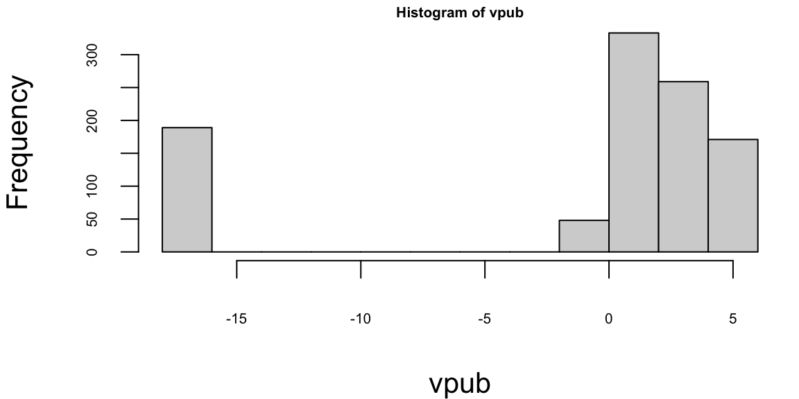
mean(vpub) -1.2We can see that the distribution of discounted rewards is bimodal and depends on whether you get to “Fail” state or not.
The value of a state is the expected discounted reward starting from that state \[ V(s) = E[G_t \mid s_t = s]. \] It evaluates the long-term value of state \(s\) (the goodness of a state). It can be drastically different from the reward value associated with the state. In our student example, the reward for the “Pub” state is 3, but the value is -1.2.
The value of a state can be calculated recursively using the Bellman equation \[\begin{align*} V(s) &= E[G_t \mid s_t = s] \\ &= E[R_{t+1} + \gamma R_{t+2} + \gamma^2 R_{t+3} + \cdots \mid s_t = s] \\ &= E[R_{t+1} + \gamma G_{t+1} \mid s_t = s] \\ &= E[R_{t+1} + \gamma V(s_{t+1}) \mid s_t = s] \\ &= \sum_{s'} P(s' \mid s) \left[R(s) + \gamma V(s')\right]. \end{align*}\]
Example 9.3 (Game of Chess as an MDP) We can consider a simple example of a game of chess.
In chess, a state \(s\) represents the configuration of the chessboard at any given time. This includes the positions of all the pieces (pawns, knights, bishops, rooks, queen, and king) for both players (white and black). Each possible arrangement of these pieces on the chessboard is a unique state. The game starts in a standard initial state (the standard chess setup) and progresses through a series of states as moves are made. If the game is played to completion, it ends in a terminal state (checkmate, stalemate, or draw). Also if we reach a state that has been seen before multiple times in a row, we can stop the game and declare a draw. Thus, we need to remember the states we have seen before and essentially expand the state space to include the number of times we have seen the state. In a timed game, the game can also end when a player runs out of time.
Actions \(a\) in chess are the legal moves that can be made by the player whose turn it is to move. This includes moving pieces according to their allowed movements, capturing opponent pieces, and special moves like castling or en passant. The set of actions available changes with each state, depending on the position of the pieces on the board.
In chess, the transition probability is deterministic for the most part, meaning that the outcome of a specific action (move) is certain and leads to a predictable next state. For example, moving a knight from one position to another (assuming it’s a legal move) will always result in the same new configuration of the chessboard. However, in the context of playing against an opponent, there is uncertainty in predicting the opponent’s response, which can be seen as introducing a probabilistic element in the larger view of the game.
Defining a reward function \(R\) in chess can be complex. In the simplest form, the reward could be associated with the game’s outcome: a win, loss, or draw. Wins could have positive rewards, losses negative, and draws could be neutral or have a small positive/negative value. Alternatively, more sophisticated reward functions can be designed to encourage certain strategies or positions, like controlling the center of the board, protecting the king, or capturing opponent pieces.
Chess is a game of perfect information, meaning all information about the game state is always available to both players. While the number of states in chess is finite, it is extremely large, making exhaustive state analysis (like traditional MDP methods) computationally impractical.
In practice, solving chess as an MDP, especially using traditional methods like value iteration or policy iteration, is not feasible due to the enormous state space. Modern approaches involve heuristic methods, machine learning, and deep learning techniques. For instance, advanced chess engines and AI systems like AlphaZero use deep neural networks and reinforcement learning to evaluate board positions and determine optimal moves, but they do not solve the MDP in the classical sense.
The goal in an MDP is to find a policy \(a = \pi(s)\) (a function from states to actions) that maximizes the sum of discounted rewards: \[ V^\pi(s) = E_{\pi}[G_t \mid S_t = s], \] where \[ G_t = \sum_{t=0}^{\infty} \gamma^t R(s_t, \pi(s_t), s_{t+1}) \]
Function \(V^\pi(s)\) is the value of state s under policy \(\pi\). Similarly we can define the action-value function \(Q^\pi(s,a)\) as the value of taking action \(a\) in state \(s\) under policy \(\pi\): \[ Q^\pi(s,a) = E_{\pi}[G_t \mid S_t = s, A_t = a]. \]
Bellman Equations for MDP simply state that the value of a state is the sum of the immediate reward and the discounted value of the next state \[ V^\pi(s) = E_{\pi}[R_{t+1} + \gamma V^{\pi}(S_{t+1})\mid S_t = s] = \sum_{a\in A}\pi(a\mid s)\left(R_s^a + \gamma \sum_{s'\in S}P^a_{ss'}V^pi(s') \right). \] The action-value function satisfies the following Bellman equation \[ Q^\pi(s,a) = E_{\pi}[R_{t+1} + \gamma Q^{\pi}(S_{t+1}, A_{t+1})\mid S_t = s, A_t = a]. \] The value function can be defined as an expectation over the action-value function \[ V^\pi(s) = E_{\pi}[Q^\pi(s,a)\mid S_t = s] = \sum_{a\in A}\pi(a\mid s)Q^\pi(s,a). \] In matrix form, we have \[ Q^\pi(s,a) = R_s^a + \gamma \sum_{s'\in S}P_{ss'}^a V^\pi(s') = R_s^s + \gamma \sum_{s'\in S}P_{ss'}^a\sum_{a'\in A}\pi(a'\mid s')Q^\pi(s',a'). \] Now we can define the Bellman equation in the matrix form \[ V^\pi = R^\pi + \gamma P^\pi V^\pi. \] The direct solution is then \[ V^\pi = (I - \gamma P^\pi)^{-1}R^\pi. \] The optimal value function \(V^*(s)\) is the value function for the optimal policy \(\pi^*(s)\) \[ V^*(s) = \max_\pi V^\pi(s). \] The optimal action-value function \(Q^*(s,a)\) is the action-value function for the optimal policy \(\pi^*(s)\) \[ Q^*(s,a) = \max_\pi Q^\pi(s,a). \] The optimal policy \(\pi^*(s)\) is the policy that maximizes the value function \[ \pi^*(s) = \arg\max_a Q^*(s,a). \] The optimal value function satisfies the Bellman optimality equation \[ V^*(s) = \max_a Q^*(s,a). \] and vice-versa \[ Q^*(s,a) = R_s^a + \gamma \sum_{s'\in S}P_{ss'}^a V^*(s'). \]
The Bellman optimality equation is non-linear and is typically solved iteratively using Value Iteration, Policy Iteration, or Q-learning. Q-learning is an off-policy algorithm that learns the optimal policy by directly estimating the optimal action-value function \(Q^*(s,a)\). The algorithm iteratively updates the action-value function using the Bellman optimality backup. The off-policy means that the algorithm learns the optimal policy while following a different policy. The algorithm can learn the optimal policy while following a random policy, for example.
MDP Solvers
The underlying approach behind all MDP solvers is to iteratively apply the Bellman equations until convergence. The main difference between the solvers is how they update the value function. All of them use dynamic programming approach to find optimal policy. Dynamic programming is a method for solving complex problems by breaking them down into simpler subproblems. It is applicable to problems exhibiting the properties of overlapping subproblems and optimal substructure. If a problem can be solved by combining optimal solutions to non-overlapping subproblems, the strategy is called divide and conquer instead. This is why dynamic programming is applicable to solving MDPs.
First, we consider how to find the values of states under a given policy \(\pi\). We can iteratively apply Bellman expectation backup. We update the values using the following update rule \[ V_{k+1}(s) = \sum_{a} \pi(a \mid s) \sum_{s'} P(s' \mid s, a)[R(s, a, s') + \gamma V_k(s')]. \] We will introduce the short-cut notation \[ P_{ss'}^a = P(s' \mid s, a), \quad R_s^a = \sum_{s'} P(s' \mid s, a)R(s, a, s'). \] Then in matrix form the update rule becomes \[ V_{k+1} = R^{\pi} + \gamma P^{\pi} V_k. \]
The policy iteration algorithm involves two main steps: policy evaluation and policy improvement, which are iteratively applied until convergence. We start with an arbitrary value function, often initialized to zero for all states. \[\begin{align*} V_0(s) &= 0 \\ V_{k+1} = & R^{\pi} + \gamma P^{\pi} V_k\\ \pi_{k+1} &= \arg\max_a R^a + \gamma P^a V_{k+1} = \arg\max_a Q^\pi(s,a) \end{align*}\] The last step is to simply choose the action that maximizes the expected return in each state. Although it can be slow in practice, the convergence is guaranteed because the value function is a contraction mapping. We typically stop the iterations when the maximum change in the value function is below a threshold.
It can be used for calculating the optimal policy. The Bellman optimality equation is a fundamental part of finding the best policy in MDPs. \[ V^*(s) = \max_a \sum_{s', r} P(s', r | s, a)[r + \gamma V^*(s')] \] The optimal policy is then \[ \pi^*(s) = \arg\max_a \sum_{s', r} P(s', r | s, a)[r + \gamma V^*(s')] \] The optimal policy is the one that maximizes the value function. The optimal value function is the value function for the optimal policy. The optimal value function satisfies the Bellman optimality equation. The optimal policy can be found by maximizing the right hand side of the Bellman optimality equation.
Given an optimal policy, we can subdivide it into two parts: the optimal first action \(A^*\) and the optimal policy from the next state \(S'\). The optimal value \(V^*\) can be found using one-step lookahead \[ V^*(s) = \max_a R_s^a + \gamma \sum_{s'\in S} P_{ss'}^a V^*(s') \] This allows us to define another approach to solving MDPs, called value iteration. The value iteration algorithm starts with an arbitrary value function and iteratively applies the Bellman optimality backup. The algorithm updates the value function using the following update rule \[ V_{k+1}(s) = \max_a R_s^a + \gamma \sum_{s'\in S} P_{ss'}^a V_k(s'). \] In matrix form, the update rule becomes \[ V_{k+1} = \max_a R^a + \gamma P^a V_k. \] The algorithm stops when the maximum change in the value function is below a threshold. The optimal policy can be found by maximizing the right hand side of the Bellman optimality equation \[ \pi^*(s) = \arg\max_a R_s^a + \gamma \sum_{s'\in S} P_{ss'}^a V^*(s'). \]
In practice, exactly solving the Bellman Expectation Equation in the policy evaluation step can be computationally expensive for large state spaces. Approximate methods may be used. Policy Iteration is particularly effective when the optimal policy needs to be very precise, as in high-stakes decision-making environments.
Example 9.4 (MDP for a Maze) We use a mazemdp archive by Sally Gao, Duncan Rule, Yi Hao to demonstrate the value and policy iterations. Both are applied to the problem of finding an optimal policy for a maze. The maze is represented as a grid, with each cell either being a wall or empty. Agent (decision maker) does not know the maze structure and needs to find the optimal path from the start to the goal state. The agent starts in the bottom right corner and needs to reach the top left corner (marked as red). The agent can move up, down, left, or right, but not diagonally (actions). Moving into a wall keeps the agent in the same cell. Reaching the goal state gives a reward of +1, and all other transitions give a reward of 0. The goal is to find the optimal policy that maximizes the expected return (sum of discounted rewards) for the agent. In other words, the agent needs to find the shortest path to the exit.
Figures below show the snapshot from policy (top row) and value (bottom row) iterations.
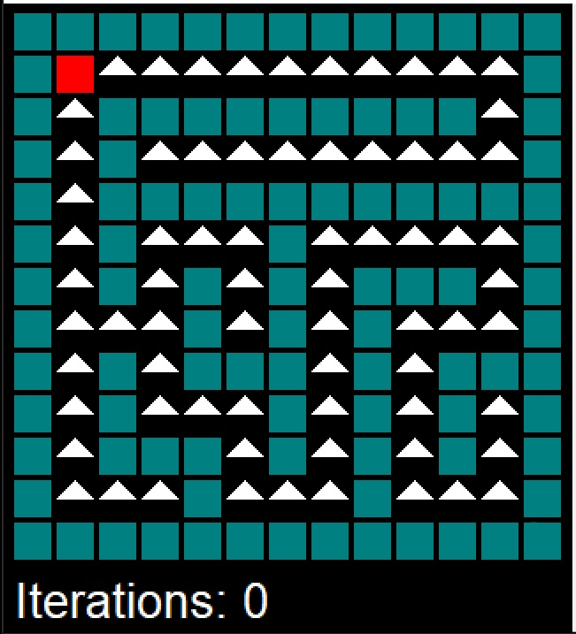
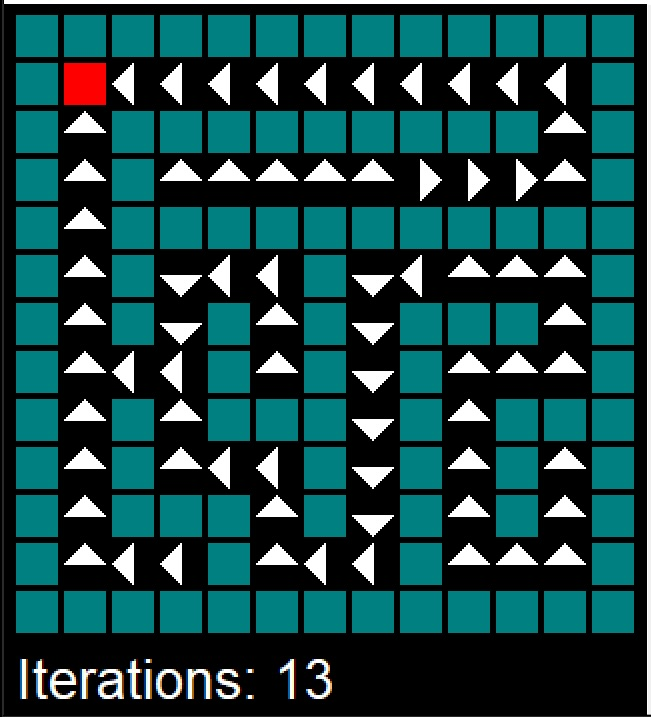
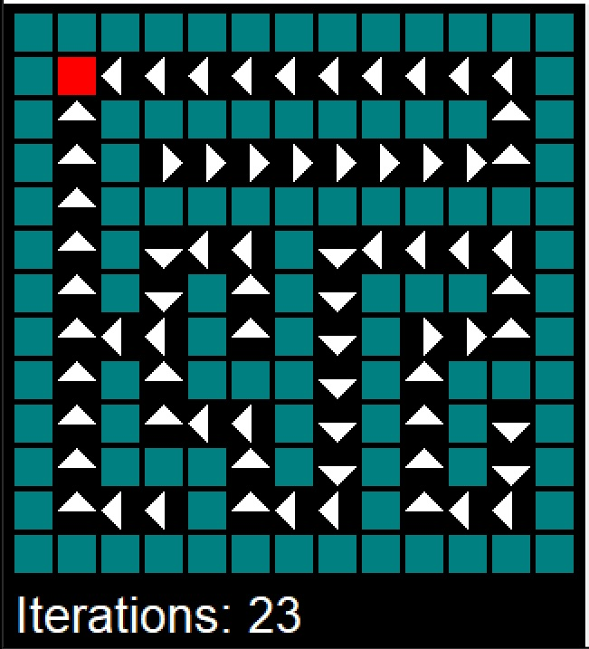
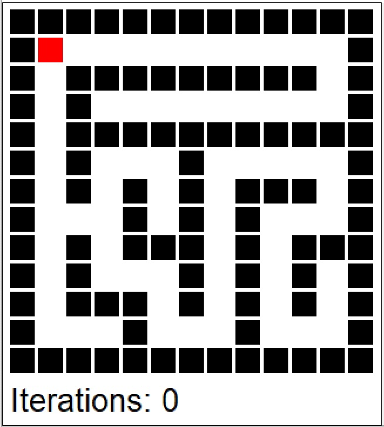
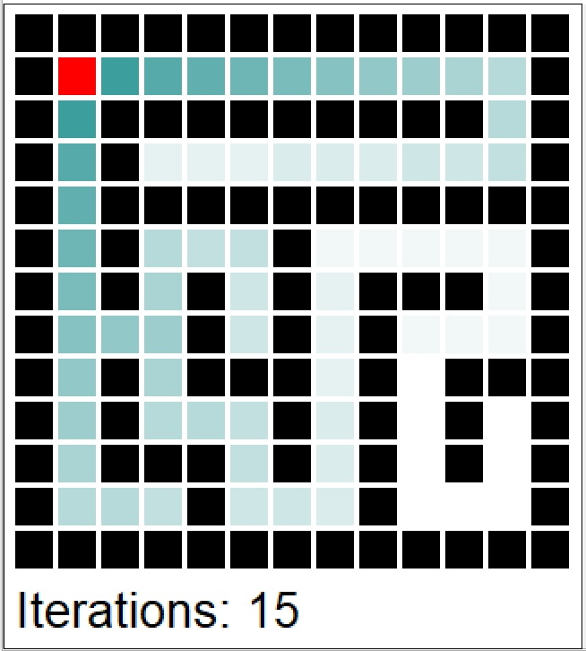

The policy iterations converged after 24 iterations.
Example 9.5 (MDP for Forest Management) We can consider one of the classic examples of a Markov Decision Process (MDP). Imagine you need to calculate an optimal policy to manage a forest to prevent possible fires. The goal is to decide between two possible actions to either ‘Wait’ or ‘Cut’. They correspond to balancing between ecological preservation and economic gain, considering the random event of a fire. We can break down the elements of this model.
States: Represent the age of the forest. The states are denoted as \(\{0, 1,\ldots, S-1\}\), where 0 is the youngest state (just after a fire or cutting) and \(S-1\) is the oldest state of the forest.
Actions: There are two actions available:
- ‘Wait’ (Action 0): Do nothing and let the forest grow for another year.
- ‘Cut’ (Action 1): Harvest the forest, which brings immediate economic benefit but resets its state to the youngest.
Probabilities: There’s a probability ‘p’ each year that a fire occurs, regardless of the action taken. If a fire occurs, the forest returns to state 0.
Transition Matrix (P): This matrix defines the probabilities of moving from one state to another, given a specific action.
We will use mdp_example_forest function from the MDPtoolbox package to generate the transition probability matrix and reward matrix for the Forest example.
library(MDPtoolbox)
# Define the transition and reward matrices for the Forest example
res = mdp_example_forest(S=4,r1=10,r2=1,p=0.01)This function generates a transition probability \(P\) of size \((|A| \times |S| \times |S|\), there are three states by default \(S = \{0,1,2\}\) and two actions.
res$P[,,1]
res$P[,,2] [,1] [,2] [,3] [,4]
[1,] 0.01 0.99 0.00 0.00
[2,] 0.01 0.00 0.99 0.00
[3,] 0.01 0.00 0.00 0.99
[4,] 0.01 0.00 0.00 0.99 [,1] [,2] [,3] [,4]
[1,] 1 0 0 0
[2,] 1 0 0 0
[3,] 1 0 0 0
[4,] 1 0 0 0As well as the reward matrix \(R\) of size \(|S| \times |A|\).
res$R R1 R2
[1,] 0 0
[2,] 0 1
[3,] 0 1
[4,] 10 1mdp_value_iteration(res$P, res$R, discount = 0.9, epsilon = 1e-6, max_iter = 10000) "MDP Toolbox WARNING: max_iter is bounded by 5000"
"MDP Toolbox: iterations stopped, epsilon-optimal policy found" 13 21 30 40
$policy
[1] 1 1 1 1
$iter
[1] 5
$time
Time difference of 0.00096 secs
$epsilon
[1] 1e-06
$discount
[1] 0.9mdp_policy_iteration(res$P, res$R, discount=0.9) 4.7 5.2 5.2 92.1
$policy
[1] 1 2 2 1
$iter
[1] 1
$time
Time difference of 0.011 secsA more general form of a value function is the action-value function \(Q^\pi(s,a)\), which represents the expected return when starting from state \(s\), taking action \(a\), and following policy \(\pi\) thereafter. \[ Q^\pi(s,a) = E_{\pi}\left[G_t \mid s_t = s, a_t = a\right]. \] We can derive both the value and optimal policy functions from the action-value function: \[ V^\pi(s) = \sum_{a \in A} \pi(a|s) Q^\pi(s,a) \] \[ \pi^*(s) = \arg\max_a Q^*(s,a) \]
Model-Free Methods
Both policy and value iterations we’ve considered thus far assume that transition probabilities between states given actions are known. However, this is often not the case in many real-world problems. Model-free methods learn through trial and error, by interacting with the environment and observing the rewards. The first method we consider is Monte Carlo methods. Monte Carlo methods for Markov Decision Processes (MDPs) are a class of algorithms used for finding optimal policies when the model of the environment (i.e., the transition probabilities and rewards) is unknown or too complex to model explicitly. These methods rely on learning from experience, specifically from complete episodes of interaction with the environment. Here’s a detailed look at how Monte Carlo methods work in the context of MDPs:
- Generate Episodes: An episode is a sequence of states, actions, and rewards, from the start state to a terminal state. \[ S_0, A_0, R_1, S_1, A_1, R_2, \ldots, S_{T-1}, A_{T-1}, R_T \sim \pi. \] In Monte Carlo methods, these episodes are generated through actual or simulated interaction with the environment, based on a certain policy.
- Estimate Value Functions: Unlike dynamic programming methods, which update value estimates based on other estimated values, Monte Carlo methods update estimates based on actual returns received over complete episodes. This involves averaging the returns received after visits to each state. We use empirical mean to estimate the expected value.
- Policy Improvement: After a sufficient number of episodes have been generated and value functions estimated, the policy is improved based on these value function estimates.
Monte Carlo methods require complete episodes to update value estimates. This makes them particularly suitable for episodic tasks, where interactions naturally break down into separate episodes with clear starting and ending points. MC methods require sufficient exploration of the state space. This can be achieved through various strategies, like \(\epsilon\)-greedy policies, where there’s a small chance of taking a random action instead of the current best-known action. In this case, the policy is given by \[ \pi(a \mid s) = \begin{cases} 1 - \epsilon + \frac{\epsilon}{|A|} & \text{if } a = \arg\max_{a'} Q(s,a') \\ \frac{\epsilon}{|A|} & \text{otherwise} \end{cases} \] where \(\epsilon\) is the probability of taking a random action and \(|A|\) is the number of actions. The \(\epsilon\)-greedy policy is an example of an exploration-exploitation strategy, where the agent explores the environment by taking random actions (exploration) while also exploiting the current knowledge of the environment by taking the best-known action (exploitation). The value of \(\epsilon\) is typically decayed over time, so that the agent explores more in the beginning and exploits more later on.
Monte Carlo methods are model-free, meaning they do not require a model of the environment (transition probabilities and rewards). They are also effective in dealing with high variance in returns, which can be an issue in some environments. However, they can be inefficient due to high variance and the need for many episodes to achieve accurate value estimates. They also require careful handling of the exploration-exploitation trade-off. The two main approaches for Monte Carlo methods are first-visit and every-visit methods.
- First-Visit MC: In this approach, the return for a state is averaged over all first visits to that state in each episode.
- Every-Visit Monte Carlo: Here, the return is averaged over every visit to the state, not just the first visit in each episode.
Monte Carlo Policy Iteration involves alternating between policy evaluation (estimating the value function of the current policy using Monte Carlo methods) and policy improvement (improving the policy based on the current value function estimate). This process is repeated until the policy converges to the optimal policy.
To find the optimal policy, a balance between exploration and exploitation must be maintained. This is achieved through strategies like \(\epsilon\)-greedy exploration. In Monte Carlo Control, the policy is often improved in a greedy manner based on the current value function estimate.
Recall that an arithmetic average can be updated recursively \[ \bar{x}_n = \frac{1}{n}\sum_{i=1}^n x_i = \frac{1}{n}\left(x_n + \sum_{i=1}^{n-1} x_i\right) = \frac{1}{n}\left(x_n + (n-1)\bar{x}_{n-1}\right) = \bar{x}_{n-1} + \frac{1}{n}(x_n - \bar{x}_{n-1}). \] This is called a running average. We can use this recursion to update the value function \(V(s)\) incrementally, each time we visit state \(s\) at time \(t\). \[ V(s_t) = V(s_t) + \frac{1}{N(s_t)}(G_t - V(s_t)), \] where \(N(s_t)\) is the number of times we visited state \(s_t\) before time \(t\) and \(G_t\) is the return at time \(t\). This is called first-visit Monte Carlo method. Alternatively, we can use every-visit Monte Carlo method, where we update the value function each time we visit state \(s\).
Alternatively, we can use a learning rate \(\alpha\) \[ V_{n+1} = V_n + \alpha(G_n - V_n). \] This is called constant step size update. The learning rate is a hyperparameter that needs to be tuned. The constant step size update is more convenient because it does not require keeping track of the number of visits to each state. The constant step size update is also more robust to non-stationary problems.
Temporal Difference Learning (TD Learning) Similar to MC, TD methods learn directly from raw experience without a model of the environment. However, unlike MC methods, TD methods update value estimates based on other learned estimates, without waiting for the end of an episode. This is called bootstrapping. TD methods combine the sampling efficiency of Monte Carlo methods with the low variance of dynamic programming methods. They are also model-free and can learn directly from raw experience. However, they are more complex than MC methods and require careful tuning of the learning rate.
A simple TD method is TD(0), which updates value estimates based on the current reward and the estimated value of the next state. The update rule is \[ V(S_t) = V(S_t) + \alpha(R_{t+1} + \gamma V(S_{t+1}) - V(S_t)), \] where \(\alpha\) is the learning rate. The TD(0) method is also called one-step TD because it only looks one step ahead. The \(R_{t+1} + \gamma V(S_{t+1})\) term is called the TD target and is a biased estimate of \(V(S_t)\). The difference \(R_{t+1} + \gamma V(S_{t+1}) - V(S_t)\) is called the TD error. The TD target is an estimate of the return \(G_t\) and the TD error is the difference between the TD target and the current estimate \(V(S_t)\). Although TD algorithms have lower variance than MC methods, they have higher bias. In practice TD methods are more efficient than MC methods.
Q-Learning
Q-learning is an off-policy algorithm that learns the optimal policy by directly estimating the optimal action-value function \(Q^*(s,a)\). The algorithm iteratively updates the action-value function using the Bellman optimality backup. The off-policy means that the algorithm learns the optimal policy while following a different policy. The algorithm can learn the optimal policy while following a random policy, for example. The algorithm can be summarized as follows: \[ Q(S_t,A_t) = Q(S_t,A_t) + \alpha(R_{t+1} + \gamma \max_a Q(S_{t+1},a) - Q(S_t,A_t)), \] where \(\alpha\) is the learning rate. The algorithm can be summarized as follows:
- Initialize \(Q(s,a)\) arbitrarily
- Repeat for each episode:
- Initialize \(S\)
- Repeat for each step of the episode:
- Choose \(A\) from \(S\) using policy derived from \(Q\) (e.g., \(\epsilon\)-greedy)
- Take action \(A\), observe \(R\), \(S'\)
- \(Q(S,A) = Q(S,A) + \alpha(R + \gamma \max_a Q(S',a) - Q(S,A))\)
- \(S = S'\)
- Until \(S\) is terminal
Then we can simplify the update rule to \[ Q(S_t,A_t) = (1-\alpha)Q(S_t,A_t) + \alpha(R_{t+1} + \gamma \max_a Q(S_{t+1},a)). \]
Example 9.6 (Q-Learning and Deal or No Deal) Deal or No Deal is a popular TV show where a contestant is presented with a number of sealed boxes, each containing a prize. The contestant selects a box and then proceeds to open the remaining boxes one by one. After a certain number of boxes have been opened, the banker makes an offer to buy the contestant’s box. The contestant can either accept the offer and sell the box or reject the offer and continue opening boxes. The game continues until the contestant either accepts an offer or opens all the boxes. The goal is to maximize the expected value of the prize in the contestant’s box. The rule of thumb is to continue as long as there are two large prizes left. Continuation value is large. For example, with three prizes and two large ones, risk averse people will naively choose deal, when if they incorporated the continuation value they would choose no deal.
Let \(s\) denote the current state of the system and \(a\) an action. The \(Q\)-value, \(Q_t(s,a)\), is the value of using action \(a\) today and then proceeding optimally in the future. We use \(a=1\) to mean no deal and \(a=0\) means deal. The Bellman equation for \(Q\)-values becomes \[ Q_{t} ( s , a) = u( s , a ) + \sum_{ s^\star } P( s^\star | s ,a ) \max_{ a } Q_{t+1} ( s^\star , a ) \] where \(u(s,a)\) is the immediate utility of taking action \(a\) in state \(s\). The value function and optimal action are given by \[ V(s) = \max_a Q ( s , a ) \; \; \text{and} \; \; a^\star = \text{argmax} Q ( s , a ) \]
Transition Matrix: Consider the problem where you have three prizes left. Now \(s\) is the current state of three prizes. \[ s^\star = \{ \text{all \; sets \; of \; two \; prizes} \} \; \; \text{and} \; \; P( s^\star | s, a =1) = \frac{1}{3} \] where the transition matrix is uniform to the next state. There’s no continuation for \(P( s^\star | s, a =0)\).
Utility: The utility of the next state depends on the contestant’s value for money and the bidding function of the banker \[ u( B ( s^\star ) ) = \frac{ B ( s^\star )^{1-\gamma} -1 }{1 - \gamma } \] in power utility case.
Expected value implies \(B( s ) = \bar{s}\) where \(s\) are the remaining prizes.
The website uses the following criteria: with three prizes left: \[ B( s) = 0.305 \times \text{big} + 0.5 \times \text{small} \] and with two prizes left \[ B( s) = 0.355 \times \text{big} + 0.5 \times \text{small} \]
Three prizes left: \(s = \{ 750 , 500 , 25 \}\).
Assume the contestant is risk averse with log-utility \(U(x) = \ln x\). Banker offers the expected value we get \[ u( B( s = \{ 750 , 500 , 25 \}) ) = \ln ( 1275/3 ) = 6.052 \] and so \(Q_t ( s , a= 0 ) = 6.052\).
In the continuation problem, \(s^\star = \{ s_1^\star , s_2^\star , s_3^\star \}\) where \(s_1^\star = \{750,500 \}\) and \(s_2^\star = \{ 750,25 \}\) and \(s_3^\star = \{ 500,25 \}\).
We’ll have offers \(625 , 387.5 , 137.5\) under the expected value. As the banker offers expected value the optimal action at time \(t+1\) is to take the deal \(a=0\) with Q-values given by \[\begin{align*} Q_{t} ( s , a=1) & = \sum_{ s^\star } P( s^\star | s ,a =1) \max_{ a } Q_{t+1} ( s^\star , a ) \\ & = \frac{1}{3} \left ( \ln (625) + \ln (387.5) + \ln (262.5) \right ) = 5.989 \end{align*}\] as immediate utility \(u( s,a ) = 0\). Hence as \[ Q_{t} ( s , a=1)=5.989 < 6.052 = Q_{t} ( s , a=0) \] the optimal action is \(a^\star = 0\), deal. Continuation value is not large enough to overcome the generous (expected value) offered by the banker.
Sensitivity analysis: we perform it by assuming different Banker’s bidding function. If we use the function from the website (2 prizes): \[ B( s) = 0.355 \times \text{big} + 0.5 \times \text{small}, \] Hence \[\begin{align*} B( s_1^\star = \{750,500 \}) & = 516.25 \\ B( s_2^\star = \{ 750,25 \}) & = 278.75 \\ B( s_3^\star = \{ 500,25 \}) & = 190 \end{align*}\]
The optimal action with two prizes left for the contestant is \[\begin{align*} Q_{t+1} ( s_1^\star , a=1) & = \frac{1}{2} \left ( \ln (750) + \ln (500) \right ) = 6.415 \\ & > 6.246 = Q_{t+1} ( s_1^\star , a=0) = \ln \left ( 516.25 \right ) \\ Q_{t+1} ( s_1^\star , a=1) & = \frac{1}{2} \left ( \ln (750) + \ln (25) \right ) = 4.9194 \\ & < 5.63 = Q_{t+1} ( s_1^\star , a=0) = \ln \left ( 278.75 \right ) \\ Q_{t+1} ( s_1^\star , a=1) & = \frac{1}{2} \left ( \ln (500) + \ln (25) \right ) = 4.716 \\ & < 5.247 = Q_{t+1} ( s_1^\star , a=0) = \left ( 516.25 \right ) \\ \end{align*}\] Hence future optimal policy will be no deal under \(s_1^\star\), and deal under \(s_2^\star , s_3^\star\).
Therefore solving for \(Q\)-values at the previous step gives \[\begin{align*} Q_{t} ( s , a=1) & = \sum_{ s^\star } P( s^\star | s ,a =1) \max_{ a } Q_{t+1} ( s^\star , a ) \\ & = \frac{1}{3} \left ( 6.415+ 5.63 + 5.247 \right ) = 5.764 \end{align*}\] with a monetary equivalent as \(\exp(5.764 ) = 318.62\).
With three prizes we have \[\begin{align*} Q_{t} ( s , a=0) & = u( B( s = \{ 750 , 500 , 25 \}) ) \\ & = \ln \left ( 0.305 \times 750 + 0.5 \times 25 \right ) \\ & = \ln ( 241.25 ) = 5.48. \end{align*}\] The contestant is offered $ 241.
Now we have \(Q_{t} ( s , a=1)= 5.7079 > 5.48 = Q_{t} ( s , a=0)\) and the optimal action is \(a^\star = 1\), no deal. The continuation value is large. The premium is $ 241 compared to $319, a 33% premium.
9.4 Bayesian Optimization
Bayesian optimization is a sequential design strategy for global optimization of black-box functions that does not assume any functional forms. It is particularly useful when the objective function is expensive to evaluate. Bayesian optimization uses a surrogate model to approximate the objective function and an acquisition function to decide where to sample next. The surrogate model is typically a Gaussian process (GP) model, which is a probabilistic model that defines a distribution over functions. The acquisition function is a heuristic that trades off exploration and exploitation to decide where to sample next. Bayesian optimization is a global optimization method, meaning it does not require derivatives and can find the global optimum of the objective function. It is also sample-efficient, meaning it can find the optimum with fewer samples than other methods. However, it can be slow in practice and is not suitable for high-dimensional problems.
Given a function \(f(x)\) that is not known analytically (it can represent, for example, output of a complex computer program), the goal is to optimize \[ x^* = \arg\min_x f(x). \]
The Bayesian approach to this problem is the following:
- Define a prior distribution over \(f(x)\)
- Calculate \(f\) at a few points \(x_1, \ldots, x_n\)
- Repeat until convergence:
- Update the prior to get the posterior distribution over \(f(x)\)
- Choose the next point \(x^+\) to evaluate \(f(x)\)
- Calculate \(f(x^+)\)
- Pick \(x^*\) that corresponds to the smallest value of \(f(x)\) among evaluated points
The prior distribution is typically a Gaussian process (GP) model, which is a probabilistic model that defines a distribution over functions. The GP model is defined by a mean function \(m(x)\) and a covariance function \(k(x,x')\). The mean function is typically set to zero. The covariance function is typically a squared exponential function \[ k(x,x') = \sigma_f^2 \exp\left(-\frac{(x-x')^2}{2l^2}\right), \] where \(\sigma_f^2\) is the signal variance and \(l\) is the length scale. The covariance function defines the similarity between two points \(x\) and \(x'\). The covariance function is also called a kernel function. The kernel function is a measure of similarity between inputs \(x\) and \(x'\).
Now we need to decide where to sample next. We can use the acquisition function to decide where to sample next. The acquisition function is a heuristic that trades off exploration and exploitation to decide where to sample next. The expected improvement (EI) function is a popular acquisition function. Suppose \[ f^* = \min y \] is the minimum value of \(f(x)\) among evaluated points. At a given point \(x\) and function value \(y = f(x)\), the expected improvement function is defined as \[ a(x) = \mathbb{E}\left[\max(0, f^* - y)\right], \] The function that we calculate expectation of \[ u(x) = \max(0, f^* - y) \] is the utility function. Thus, the acquisition function is the expected value of the utility function.
The acquisition function is high when \(y\) is likely to be lower than \(f^*\), and low when \(y\) is likely to be higher than \(f^*\). Given the GP prior, we can calculate the acquisition function analytically. The posterior distribution of Normal \(y \sim N(\mu,\sigma^2)\), then the acquisition function is \[\begin{align*} a(x) &= \mathbb{E}\left[\max(0, f^* - y)\right] \\ &= \int_{-\infty}^{\infty} \max(0, f^* - y) \phi(y,\mu,\sigma^2) dy \\ &= \int_{-\infty}^{f^*} (f^* - y) \phi(y,\mu,\sigma^2) dy \end{align*}\] where \(\phi(y,\mu,\sigma^2)\) is the probability density function of the normal distribution. A useful identity is \[ \int y \phi(y,\mu,\sigma^2) dy =\frac{1}{2} \mu ~ \text{erf}\left(\frac{y-\mu }{\sqrt{2} \sigma }\right)-\frac{\sigma e^{-\frac{(y-\mu )^2}{2 \sigma ^2}}}{\sqrt{2 \pi }}, \] where \(\Phi(y,\mu,\sigma^2)\) is the cumulative distribution function of the normal distribution. Thus, \[ \int_{-\infty}^{f^*} y \phi(y,\mu,\sigma^2) dy = \frac{1}{2} \mu (1+\text{erf}\left(\frac{f^*-\mu }{\sqrt{2} \sigma }\right))-\frac{\sigma e^{-\frac{(f^*-\mu )^2}{2 \sigma ^2}}}{\sqrt{2 \pi}} = \mu \Phi(f^*,\mu,\sigma^2) + \sigma^2 \phi(f^*,\mu,\sigma^2). \]
we can write the acquisition function as \[ a(x) = \dfrac{1}{2}\left(\sigma^2 \phi(f^*,\mu,\sigma^2) + (f^*-\mu)\Phi(f^*,\mu,\sigma^2)\right) \]
We can implement it
acq <- function(xx,p, fstar) {
x = matrix(xx, ncol=1)
d = fstar - p$mean
s = sqrt(diag(p$Sigma))
return(s*dnorm(d) + d*pnorm(d))
}Example 9.7 (Taxi Fleet Optimisation) We will use the taxi fleet simulator from Emukit project. For a given demand (the frequency of trip requests) and the number of taxis in the fleet, it simulates the taxi fleet operations and calculates the profit. The simulator is a black-box function, meaning it does not have an analytical form and can only be evaluated at specific points. The goal is to find the optimal number of taxis in the fleet that maximizes the profit. We will use Bayesian optimization to solve this problem.

We start with initial set of three designs \(x = (10,30,90)\), where \(x\) is the number of the taxis in the fleet and observe the corresponding profits profit=(3.1,3.6,6.6). When \(x=10\), the demand for taxis exceeds the supply and passengers need to wait for their rides, leading to missed profit opportunities. At another extreme when we have 90 taxis, the profit is slightly better. However, there are many empty taxis, which is not profitable. The optimal number of taxis must be somewhere in the middle. Finally, we try 30 taxis and observe that the profit is higher than both of our previous attempts. However, should we increase or decrease the number of taxis from here? We can use Bayesian optimization to answer this question. First we define a convenience function to plot the GP emulator.
plotgp = function(x,y,XX,p) {
q1 = qnorm(0.05, mean = p$mean, sd = sqrt(diag(p$Sigma)))
q2 = qnorm(0.95, mean = p$mean, sd = sqrt(diag(p$Sigma)))
q3 = qnorm(0.5, mean = p$mean, sd = sqrt(diag(p$Sigma)))
ggplot() +
geom_point(aes(x=x,y=y)) +
geom_line(aes(x=XX,y=q3), col=2, lwd=2) +
geom_ribbon(aes(x=XX, ymin=q1, ymax=q2), fill="blue", alpha=0.2)
}Now, we fit the GP emulator using our initial set of observed taxi-profit pairs.
library(laGP)
library(mvtnorm)
x = matrix(c(10,90,30), ncol=1)
xx = seq(1,100, length=500)
XX <- matrix(xx, ncol = ncol(x))
profit = -c(3.1,3.6,6.6)
gp <- newGP(x, profit, 1000, 1e-6, dK = TRUE)
p <- predGP(gp, XX)
plotgp(x,profit,XX,p)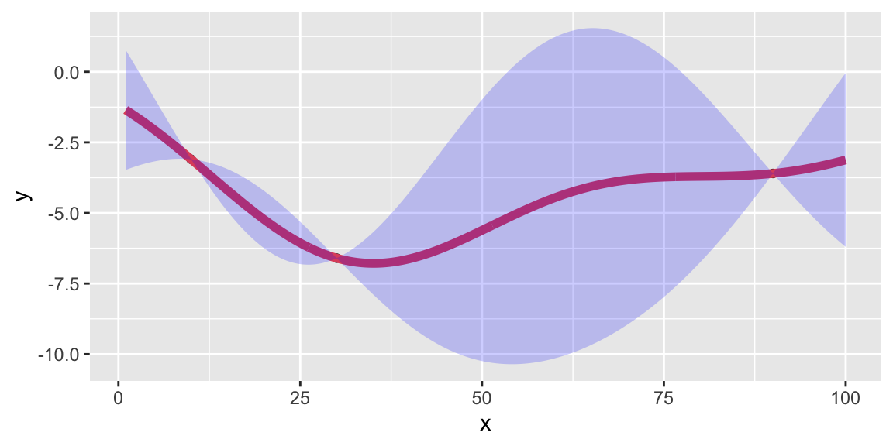
Instead of maximizing the profit, we minimize the negative profit. We see that there is potentially a better value at around 50 taxis. We can use the acquisition function to decide where to sample next. We define two functions: nextsample that uses the acquisition function to decide where to sample next and updgp that updates the GP emulator with the new sample. Then we call those two functions twice. First time, EI suggests 44 and second time it suggests 42. We update the GP emulator with the new samples and plot the updated emulator. We see that the GP emulator is updated to reflect the new samples.
nextsample = function(){
ei = acq(xx,p,min(profit))
plot(xx,ei, type='l', col=2, lwd=2)
xnext = as.integer(xx[which.max(ei)])
return(xnext)
}
updgp = function(xnext,f){
profit <<- c(profit, f)
x <<- c(x, xnext)
updateGP(gp, matrix(xnext,ncol=1), f)
p <<- predGP(gp, XX)
plotgp(x,profit,XX,p)
}
nextsample(); #44
updgp(44, -8.4);
nextsample(); # 57
updgp(57, -7.1);
nextsample(); # 45
updgp(45, -8.5);
nextsample(); # 100
updgp(100, -3.3);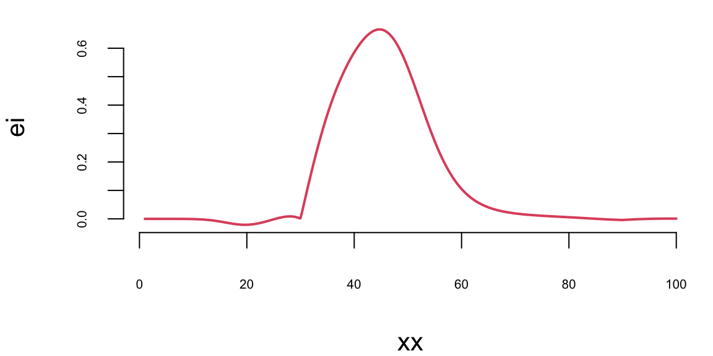
44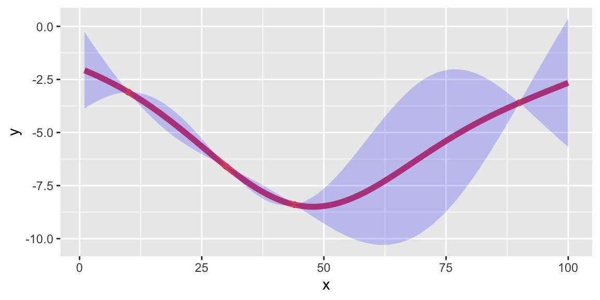
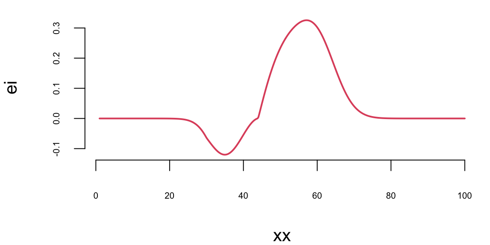
57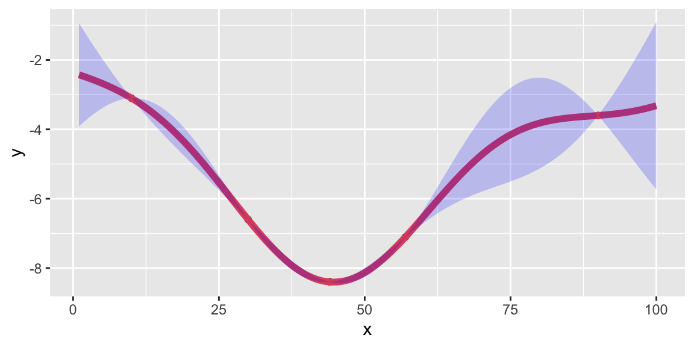
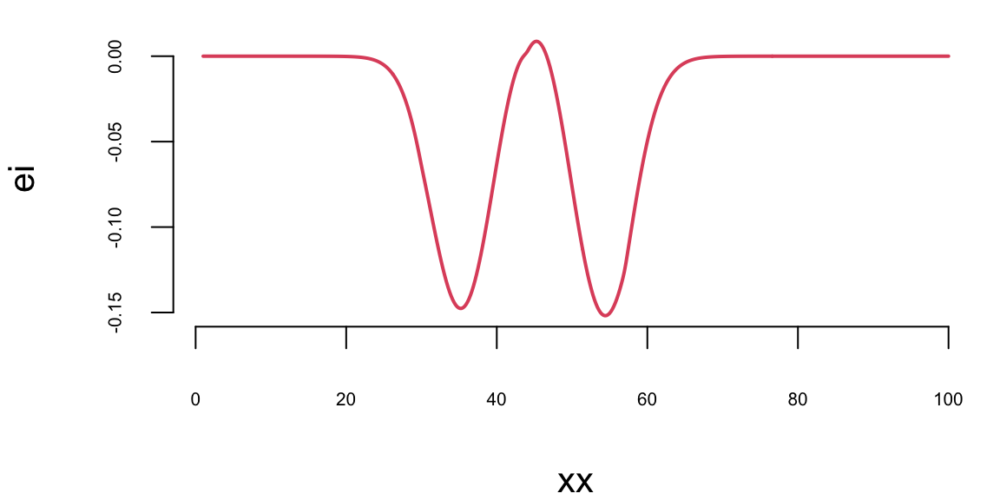
45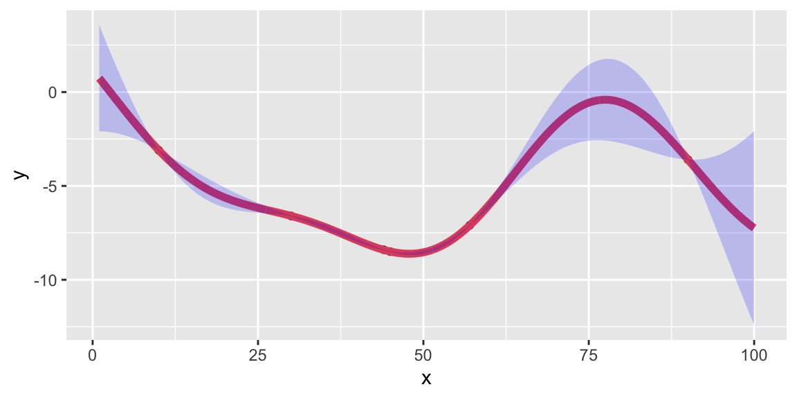
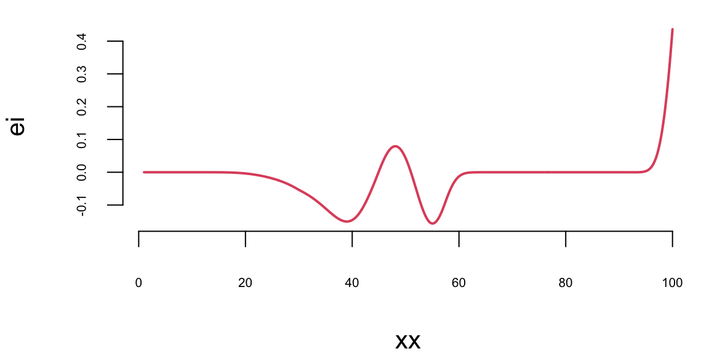
100
If we run nextsample one more time, we get 47, close to our current best of 45. Further, the model is confident at this location. It means that we can stop the algorithm and declare victory.
nextsample()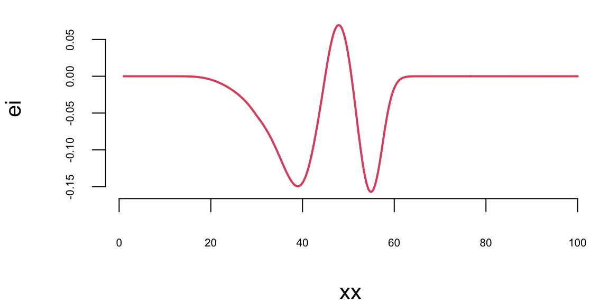
479.5 Concluding Remarks
In this chapter, we explored the foundational concepts of Markov Decision Processes (MDPs) and their central role in reinforcement learning. We saw how MDPs provide a flexible mathematical framework for modeling sequential decision-making under uncertainty, with applications ranging from robotics and operations research to online recommendation systems and resource allocation in business.
Through both analytical derivations and Monte Carlo simulations, we examined classic problems such as the secretary problem and taxi fleet optimization, illustrating how simulation and Bayesian optimization can be used to make effective decisions in complex, uncertain environments. The use of Gaussian Process (GP) emulators and acquisition functions like Expected Improvement (EI) demonstrates the power of combining probabilistic modeling with principled exploration strategies—a hallmark of modern reinforcement learning.
As you continue your study of reinforcement learning, remember that the real world rarely presents us with simple, fully known models. The techniques introduced here—modeling uncertainty, simulating outcomes, and iteratively improving decisions—are essential tools for tackling the challenges of real-world AI and data-driven decision making. Whether you are optimizing ad placements, managing supply chains, or designing intelligent agents, the principles of MDPs and Bayesian optimization will serve as a strong foundation for your work.